If you are a fan of colcannon, you’ll love this spin on the traditional Irish dish. All the flavors of colcannon turned into yummy fried appetizer balls with a crispy exterior and fluffy mashed potato interior. Serve with an herby sour cream sauce or mustard sauce for dipping.
Ingredients
- 3 large russet potatoes, peeled and cut into chunks
- 2 cups chopped green cabbage or kale
- 1/4 cup chopped green onions or leeks
- 1/4 cup chopped fresh parsley
- 3/4 teaspoon salt
- 1/4 teaspoon freshly ground black pepper
- 2 tablespoons butter
- 3/4 cup freshly grated Parmesan cheese
- 4 large eggs, divided
- 1 cup dried Italian bread crumbs, divided
- 2 tablespoons water
- 2 1/2 cups vegetable oil for deep frying
Directions
-
Gather all ingredients.
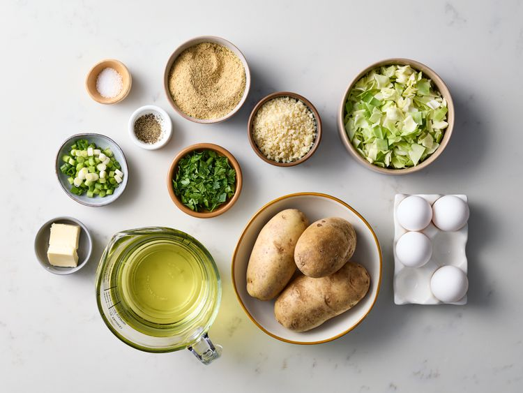
-
Place potatoes in a large saucepan and add enough water to just cover. Bring to a boil. Cover and cook until tender, about 15 minutes; drain
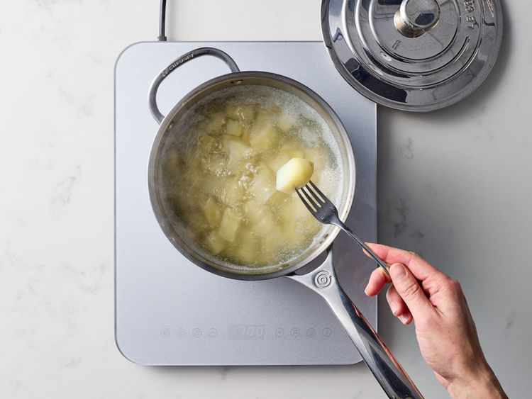
-
Meanwhile, cook cabbage in boiling water in a covered saucepan until tender, about 6 minutes; drain
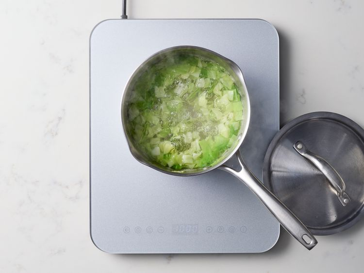
-
Mash potatoes. Stir in onions and parsley and season with salt and pepper. Add butter and drained cabbage. Stir until butter is melted and mixture is well combined.
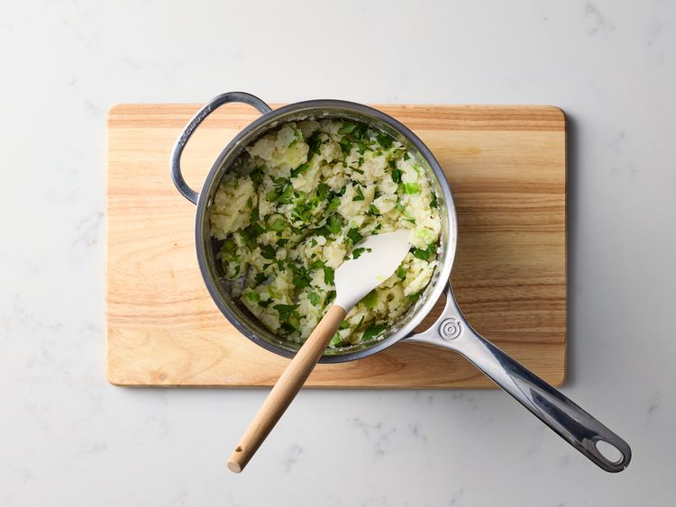
-
Transfer mixture to a 10x15-inch baking pan and spread out evenly.
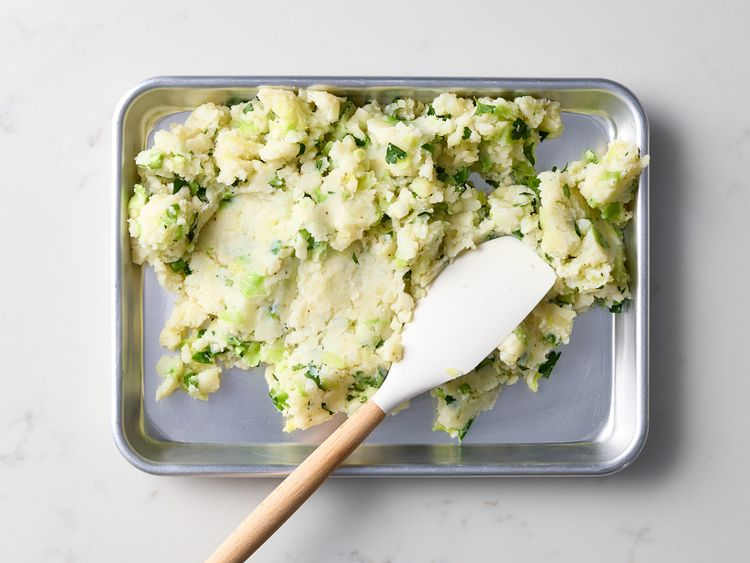
-
Place pan in the refrigerator until mashed potatoes are fully cooled, about 1 hour.
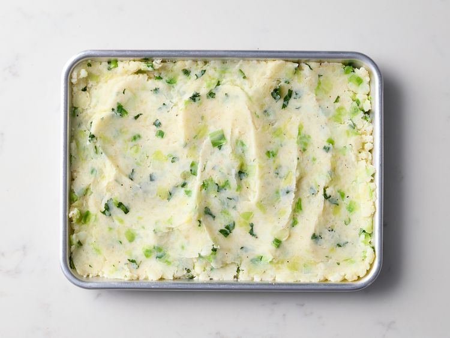
-
Combine cooled mashed potato mixture, Parmesan cheese, 1/4 cup breadcrumbs, and 2 eggs in a large bowl.
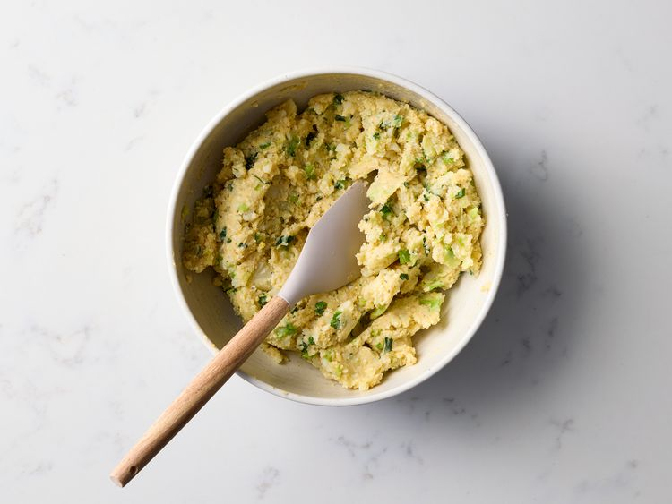
-
For egg wash, whisk together remaining 2 eggs and water in a small bowl. Pour remaining 3/4 cup breadcrumbs in a shallow dish.
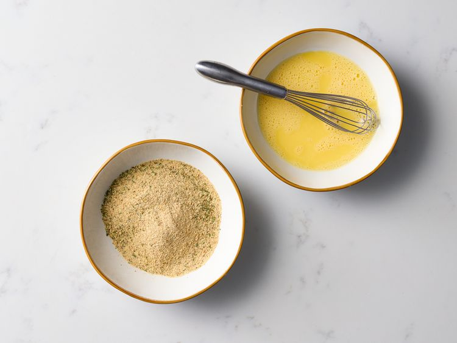
-
Form mashed potato mixture into 16 balls (about 1/4 cup each), then dredge in egg wash followed by bread crumbs. Repeat dredging in egg wash and crumbs once more.
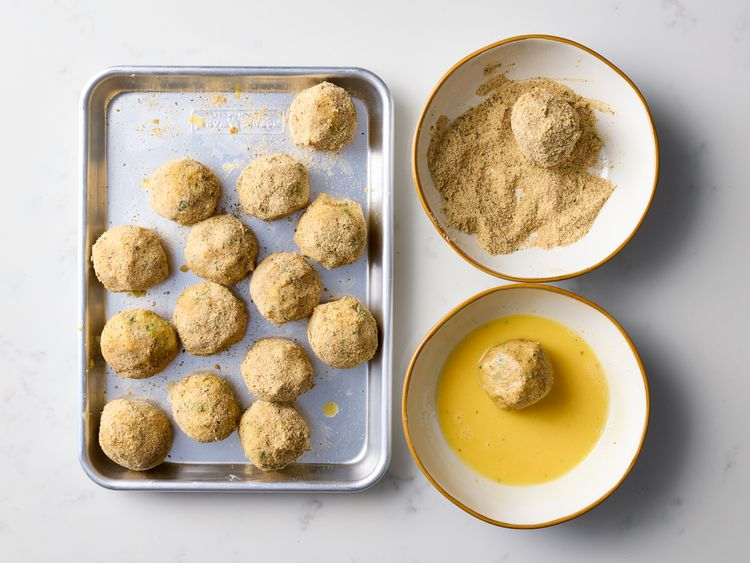
-
Pour oil 1-inch deep in a large, heavy saucepan and heat over medium-high.
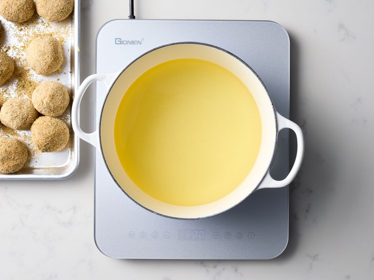
-
Fry balls in the hot oil (350 to 365 degrees F or 175 to 185 degrees C ) in batches of 4, turning over until both sides are deep brown and an instant read thermometer inserted in the center reads 165 degrees F (74 degrees C), about 6 minutes. Place fried colcannon balls on a paper towel-lined baking sheet and hold warm in a 200 degree F (95 degrees C) oven. Serve hot.
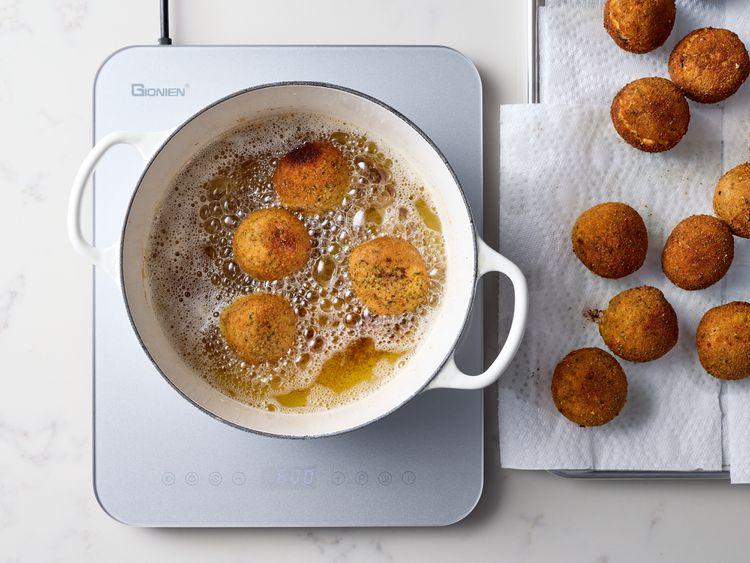